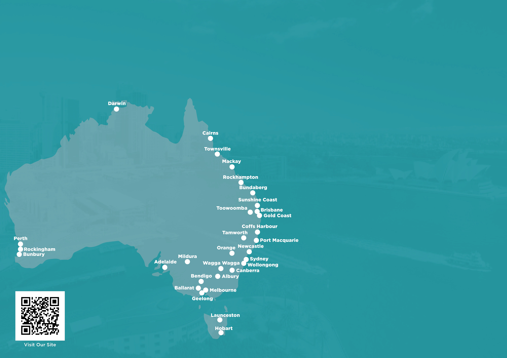

Scatter plot — Risk vs Return for each asset class.
Combo chart — Cash rate (line) + inflation rate (bars), 1990–present.
Multi-line — Building price indices for Adelaide / Brisbane / Darwin / Hobart / Canberra.
Multi-line dual-axis — NSW/VIC/QLD/SA/WA building approvals (left) + National (right).
Line chart — Australian retail turnover, monthly $B, 2004–present.
Multi-line dual-axis — NSW/VIC/QLD/WA/SA population (left) + National (right).
Line chart — All Term Deposits rate, 2004–present, with 20/10/5-year averages.
Line chart — Australian 10-year government bond yield, 2004–present, with 20-year average callout.
Line chart — non-financial corporate (BBB-rated) bond yield, monthly.
Line chart — TEU (twenty-foot-equivalent container units) moved annually through Australia's major ports.
Combo bar + line — Australian population (bars) and number of people who saw a GP (line), with the share of population on right axis.
Horizontal grouped bar — Population share by age group, 2000 vs 2020.
Horizontal bar chart — percentage of Australians who saw a GP in the last year, by age bracket.
Vertical bar chart — Federal health spend by year, 2015-16 through 2025-26.
Line chart — share of workers reporting they work from home, by state, 1976–2021 census.
Bar chart — Australian e-commerce sales ($ billions), annual.
